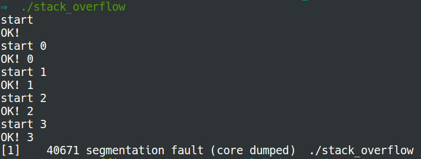

Stack overflow
A stack overflow results in a segmentation fault. The most common cause of stack overflow is excessively deep or infinite recursion. Now try the code below:
#include <stdio.h>
#include <string.h>
#include <unistd.h>
void recursion(int i) {
char a[40 * 1024];
printf("start %d\n", i);
memset(a, 0, sizeof(a));
printf("OK! %d\n", i);
recursion(i+1);
}
int main(int argc, char **argv) {
char a[8000 * 1024]; // remaining is 192 * 1024
printf("start\n");
memset(a, 0, sizeof(a));
printf("OK!\n");
recursion(0);
return 0;
}
Here is the output:
What happened?
- Find out the maximum size of the stack in kilobyte (KB)
$ ulimit -s 8192 - So the maximum size of the stack is 8192 KB = 8192 * 1024 bytes.
- In the
mainfunction, we use 8000 * 1024 bytes which remains 192 * 1024 bytes. - Four calls to the
recursionfunction use 160 * 1024 bytes. - So the fifth call to the
recursionfunction exceeds the maximum size of the stack and triggers the stack overflow.